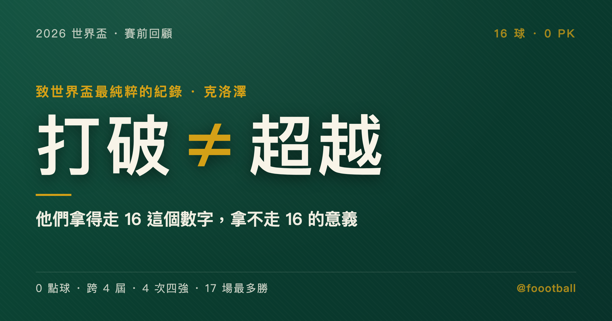

16 球今夏可能變成 17 球，但沒有人能真的「超越」克洛澤
克洛澤的世界盃 16 球紀錄今夏可能被改寫成 17 球，但這 16 球橫跨四屆、24 場、0 點球，量的不是同一把尺——數字會被『接續』，而它的純粹度至今沒有現役射手照同一條件在踢。

開賽前，許多世界盃前瞻都在預告同一件事：米羅斯拉夫·克洛澤（Miroslav Klose）的 16 球紀錄，今年夏天就要被打破了。
最有意思的是，連克洛澤自己都這麼說。
他在德國《Sport Bild》受訪時講得很坦白：「我確定我的世界盃進球紀錄很快就會被打破。要麼是梅西在這一屆做到，要麼最遲是姆巴佩在下一屆做到。」他甚至補了一句，自己是梅西的大粉絲，如果真要有人超車，他希望是梅西。
一個保持了 12 年的紀錄，持有人親口蓋章說它撐不過這個夏天。這在體育史上不算常見。
所以這篇文章不打算假裝那座紀念碑堅不可摧。它很可能在 7 月 19 日的紐澤西之前就易主。我想談的是另一件，幾乎沒有人停下來問的事：
把 16 變成 17，叫「打破紀錄」。但那等於「超越克洛澤」嗎？
這兩個詞，藏著現代足球一場安靜的範式轉移。
先看清楚，這是一個什麼樣的 16 球
要回答「打破等不等於超越」，得先把這 16 球拆開看。因為它的價值，從來不在「16」這個數字本身。
在克洛澤之前，這個寶座輪流被一批自帶星光的傳奇把持：法國的方丹（Just Fontaine）1958 年單屆狂進 13 球、西德「轟炸機」蓋德·穆勒（Gerd Müller）累積 14 球、巴西「外星人」羅納度（Ronaldo）把紀錄推到 15 球。每一個名字，都是叱吒風雲、商業價值爆棚的超級巨星。
然後輪到一個被全世界公認「最不像超級巨星」的人，安靜地坐了上去，一坐就是 12 年。光是這個對比，就已經夠耐人尋味。
克洛澤在 2002 到 2014 年、橫跨四屆世界盃、24 場比賽裡攻入 16 球。場均 0.67 球。破門部位裡，至少能確定有 7 記頭槌；其餘 9 球由腳下完成，常見的統計會再拆成 8 記右腳、1 記左腳。
關鍵在最後一行數據：這 16 球裡，沒有一粒是點球。
這不是巧合，是結構。克洛澤效力德國隊的那十三年，球隊的點球主罰權通常在巴拉克、施魏因斯泰格或穆勒手上，從來不在他這。換句話說，他的每一球都得從非十二碼的情境、防守反擊、角球與自由球的混戰裡，用搶點、卡位、頭槌硬生生鑿出來。
這件事連克洛澤本人都點破了。在同一場《Sport Bild》專訪裡，他特別提到，自己當年不是德國隊的點球手——而這一點，如今正好是梅西和姆巴佩的優勢。
一位紀錄保持人，在交棒前主動把「我和他們的條件不一樣」說清楚。這比任何球評的分析都更有說服力。
我把這 16 球的純粹性，拆成四個維度。
維度一：0 點球，沒有一顆來自十二碼
現代足壇的超級射手，幾乎都是球隊的「全火力承包商」：點球他罰、關鍵自由球他主罰、進攻戰術圍著他轉。數據累積的效率自然高。
克洛澤是反過來的。他是體系裡的終結點，不是火力的源頭。這 16 球沒有一顆來自點球，意味著每一球背後都有隊友的傳中、角球、直塞或做球，他負責的是最難量化的那一段：在後衛的肉搏裡，找到起跳與插上的那半秒。
維度二：跨越四屆、十二年的長青
| 屆別 | 進球 | 招牌特徵 |
|---|---|---|
| 2002 韓日 | 5 球（全頭槌） | 古典目標前鋒，純空戰 |
| 2006 德國 | 5 球（金靴） | 雙腳 + 頭槌全能化 |
| 2010 南非 | 4 球 | 反擊匕首，跑位大於有球 |
| 2014 巴西 | 2 球 | 機會主義獵手，登頂歷史第一 |
很多射手能在單屆爆發。方丹 1958 年一屆轟進 13 球，至今無人能及。也有不少人能在多屆世界盃進球。但能在四屆都保持產量、最後一路堆到史上第一的，克洛澤是最鮮明的例子。
這不是天賦的勝利，是進化的勝利。2002 年的他是純粹的空中霸主；到了 2010 和 2014 年，彈跳和速度都退了，他改用教科書般的無球跑位，繼續在反擊裡當最鋒利的那把刀。同一個人，用四種不同的方式贏。
維度三：和團隊成績徹底綁定
個人數據在世界盃舞台上，常常和球隊走不到最後。克洛澤剛好相反。
他踢的四屆世界盃，德國隊全部打進四強：2002 年亞軍、2006 年季軍、2010 年季軍、2014 年冠軍。這給了他多達 24 場的舞台。個人進球和團隊深度，形成了完美的正循環。
順帶一提，克洛澤還是世界盃史上拿下最多勝場（17 場）的球員。一個只在球隊一路贏球時才可能累積出來的紀錄。
維度四：把誠實放在勝負之前
這一點和進球無關，卻是這座紀念碑最特別的底座。
2005 年德甲，效力不萊梅的克洛澤在禁區內倒地，裁判判了點球、給門將出示黃牌。他主動走過去說，門將先碰到球了，沒犯規。判罰被撤銷。
2012 年義甲，拉齊奧對拿坡里，他高高躍起時用手臂把球碰進網。裁判沒看見，判進球有效。面對抗議，他自己走向裁判承認手球。進球取消，拉齊奧那場 0-3 輸球。
2023 年，歐洲足總把主席獎頒給了他，表彰的就是這種超越勝負的體育精神。
一個把團隊和誠實放在個人光環之前的中鋒。這四個維度疊起來，才是「16」這個數字真正的重量。
三個瞬間，看懂這 16 球的質地
數字是冷的。挑三個瞬間，會更清楚這座紀念碑是怎麼一塊一塊砌起來的。
2002 年，對沙烏地阿拉伯。 快滿 24 歲的克洛澤在世界盃首秀的小組賽，對沙烏地一場灌進 3 顆頭槌，完成世界盃史上罕見的頭槌帽子戲法。那屆他 5 球全是頭槌，沒有一顆用腳。當時的德國隊正值新老交替的低谷，戰術粗糙到幾乎只剩邊路傳中，而他靠彈跳、滯空和對落點的預判，把這套最原始的打法打成了金靴等級的威脅。這是純粹的空中霸主。
2010 年，對英格蘭。 南非世界盃十六強，經典的英德大戰。諾伊爾一記大腳長傳，32 歲、被外界認為已過巔峰的克洛澤，在身體對抗裡完全碾壓英格蘭中衛厄普森，準確判斷皮球反彈，伸右腳捅穿門將十指關，首開紀錄。彈跳退了，他就用經驗和卡位繼續贏。同一屆對阿根廷的兩球，更是「跑位重於有球」的教科書：他總能出現在防線最致命的盲區，把隊友的傳球變成空門。
2014 年，對巴西。 這是載入史冊的米內羅之痛（Mineirazo）。半決賽德國 7-1 血洗東道主巴西，克洛澤右腳第一下射門被門將塞薩爾撲出，他反應神速立刻補射入網。那是他的第 16 球，也是讓他正式超越羅納度、登上歷史第一的一球。地點偏偏是巴西的主場，偏偏是在巴西球王羅納度的紀錄面前。進球後，這位 36 歲的老將沒有再做年輕時招牌的前空翻，而是改成簡單的雙膝跪地。一個時代的謝幕，剛好也是另一個時代的加冕。
為什麼今年夏天，這座紀念碑「該」被撼動
說清楚純粹性之後，得同樣誠實地承認另一面：2026 年，確實是這個紀錄站上歷史最高臨界點的一年。
原因不在某位球員突然變強，而在賽制變了。
這個系列前面幾篇，從擴軍到分組，已經把 2026 年的新賽制翻來覆去談了好幾輪。這裡只挑和「進球紀錄」最相關的兩個變化。
2026 年的美加墨世界盃，是 1998 年擴軍到 32 隊以來最大的一次改制。參賽隊伍史無前例地增加到 48 支，分成 12 個小組。賽事拉長到 39 天，總場次從 64 場暴增到 104 場。晉級規則改成每組前兩名、加上 8 個最好的小組第三名，進入新增的「32 強淘汰賽」（Round of 32）。
對歷史射手榜，這帶來兩個直接的衝擊。
第一，能踢的場次變多了。 過去一支打進決賽的球隊，核心射手大概踢 7 場。新賽制下變成 8 場。對頂級射手來說，多出來的這一場，就是多一次刷新紀錄的機會。
第二，防線被稀釋了。 48 隊不可避免地引進更多排名中下游、防守組織相對鬆散的球隊。對豪強的當家射手而言，小組賽遇到弱旅的機會變多，這是累積數據的絕佳土壤。
把這兩點疊起來：一名能維持場均 1 球的射手，理論上單屆就有機會狂攬 8 球。這正是為什麼，現役的追趕者們從來沒有像今年這麼接近過。
| 球員 | 國家 | 年齡 | 現有世界盃進球 | 距打破 |
|---|---|---|---|---|
| 姆巴佩（Mbappé） | 法國 | 27 | 12 | 5 球 |
| 梅西（Messi） | 阿根廷 | 38 | 13 | 4 球 |
| 凱恩（Kane） | 英格蘭 | 32 | 8 | 9 球 |
| 內馬爾（Neymar） | 巴西 | 34 | 8 | 9 球 |
先說清楚：凱恩和內馬爾的名字雖然也在榜上，但 9 球的差距幾乎不可能在單屆世界盃抹平，內馬爾本屆還帶著傷勢復出的不確定性。真正有機會逼近的，是前兩位。
姆巴佩 27 歲，正值巔峰，是法國隊的第一點球手，只要 5 球就能獨佔歷史第一。梅西即將迎來 39 歲生日，踢第六屆世界盃，距離克洛澤只差 4 球，而且握有點球主罰權。
兩個人的處境還不太一樣。
姆巴佩這邊，法國依舊是本屆的奪冠大熱門，身邊有登貝萊（Dembélé）、奧利斯（Olise）、杜埃（Désiré Doué）這批世界級的供輸者。他在過去兩屆世界盃已經攻入 12 球：2018 年 4 球幫法國奪冠，2022 年更以 8 球拿下金靴，還在決賽上演帽子戲法。他的世界盃場均接近 0.85 球，是這份名單上效率最恐怖的一個。法國只要照預期走得夠遠，他就有接近 8 場的舞台，加上第一點球手的身分，容錯率極高。
梅西這邊則是「諸神黃昏」式的收割。38 歲、即將在賽事期間滿 39、效力美國職業大聯盟的他，高強度對抗能力無可避免地下滑，但阿根廷主帥斯卡洛尼幫他搭好了一套保護體系：靠中場的跑動覆蓋，把他的體能全部留在進攻三區的最後一傳和終結。再加上點球這個大加分項，他在小組賽面對較弱的防線時，隨時可能連場破門。
紀錄會被打破嗎？以這個賽制、這兩位射手的效率，機率是真的高。
我不打算唱反調。今年夏天，16 很可能變成 17。
但「打破」和「超越」，從來不是同一件事
承認紀錄會易主，不等於承認克洛澤會被超越。這是這篇文章真正想講的地方。
關鍵在於：現代的進球紀錄，和克洛澤的 16 球，是兩個不同物種。
現代足球的戰術邏輯，已經發生了深刻的轉移。球隊把資源，也就是點球、關鍵自由球、近乎無限的開火權，高度集中在單一的超級巨星身上。在這種體系裡誕生的進球機器，效率必然高於過去那個分工更平均的時代。
最具體的對照，就在點球。
梅西在 2022 年卡達世界盃攻入 7 球，封王封神。但那 7 球裡，有 4 球來自點球：對沙烏地、對荷蘭、對克羅埃西亞、對法國，各一記十二碼。（他在對法國的決賽和點球大戰裡還罰進更多，但點球大戰不計入世界盃進球。）這沒有任何貶低的意思，把握住每一個點球本身就是頂級的心理素質。
我想說的是條件的差異：梅西單屆 7 球，超過一半從十二碼來；克洛澤生涯 16 球，從十二碼來的是 0。
這不是誰比較厲害的問題，是兩種足球的問題。
也要說清楚：誰被指定去罰點球，多半是球隊分工和戰術文化的結果，不是射手能力的排名。克洛澤不罰、梅西罰，差別在角色，不在高下。我們比的不是「誰更強」，是「兩個數字背後，站著兩種不一樣的足球」。
一邊是「把球隊所有得分管道集中到一個人身上，讓他去刷新數字」；另一邊是「一個甘願站在體系背後、只負責最難那一段的終結者，把零碎機會一球一球鑿成紀錄」。
數字可以放在同一張榜單上比。但純粹度這個維度，沒辦法。
還有一個更基本的差別：時間的跨度。
姆巴佩如果今夏單屆轟進 6 球，那會是巔峰期一次驚人的爆發。但克洛澤的 16 球，是從快滿 24 歲一路踢到 36 歲、橫跨四屆、用三種不同球風湊出來的。前者是一道閃電，後者是一條十二年的長河。把單屆爆發累加成的數字，和跨越十二年沉澱出來的數字放在一起比大小，本來就只比到了表面。
換個方式說：足球的提問正在改變。從前我們問「誰進了最多球」，現在更該問「他是在什麼條件下，進的這些球」。前一個問題，今年夏天可能有了新答案。後一個問題，克洛澤的答案至今沒有人逼近。
那什麼才算真正的超越？
大概得有一個人，在 0 點球的前提下、橫跨四屆世界盃、在球隊不把火力全交給他的情況下，攻進超過 16 球。光是把這些條件列出來，就知道有多難。現役球員裡，沒有一個是照這個劇本在踢的。今年夏天會被刷新的，是「總進球數」這一欄；至於「在最不依賴點球與戰術資源集中的條件下，進最多球」這一欄，克洛澤大概還會獨佔很久很久。
這也是為什麼，克洛澤本人那句「我不是點球手」會這麼重要。他不是在謙虛，他是在幫我們把刻度標清楚：榜單上那一行 16，和接下來那一行 17，量的根本不是同一把尺。
古典中鋒的最後一塊紀念碑
把鏡頭再拉遠一點，會發現克洛澤的紀錄，紀念的不只是一個人。
它紀念的是一整類正在消失的球員。
克洛澤是那種「最不像超級巨星」的前鋒。1978 年生在波蘭奧波萊，童年移居德國，沒進過任何豪門的精英青訓，足球啟蒙來自德國低級別業餘聯賽，年輕時還兼職當過木匠學徒。直到快 22 歲才首次踢上德甲。
他的整個職業生涯，都和鎂光燈、夜生活、花邊新聞絕緣，公開形象長期遠離夜店與派對文化。退役轉任拜仁青年隊教練後，談起這份工作，他也總把自己放回一個普通工作者的位置，而不是站在巨星的高度。
這種球員，在今天這個數據至上、極度個人主義、商業造星的足球世界裡，幾乎已經絕跡。
現代足球需要的是能扛流量、能賣球衣、能在社群上製造話題的個人英雄。克洛澤代表的那種球員，隱藏在戰術板背後，把團隊利益和體育道德放在個人光環之上的古典團隊中鋒，正在被時代淘汰。
足球的經濟學也變了。現在一支頂級球隊願意花大錢買的前鋒，最好能一個人決定比賽、能撐起整支球隊的商業價值。克洛澤代表的那種「九號位工兵」，把自己縮小成體系裡一個齒輪，用無球跑動和搶點服務全隊，在今天的轉會市場上越來越難標出高價。當進球可以靠把資源集中到一個人身上來放大，誰還願意去當那個甘願隱形的人？
這不是在懷舊。體系球員的消失，其實透露了現代足球更深的一個轉向：球隊越來越像一家圍繞單一明星打造的公司，戰術、轉播、行銷、青訓資源全部往金字塔尖傾斜。射手榜的數字會因此越來越漂亮，但那種「全隊一起把一個工兵的搶點變成進球」的集體質感，正在變稀薄。克洛澤的 16 球，剛好是那種集體質感還能登上頂端的最後證據之一。
所以他那 16 球，某種意義上是一座輓歌式的紀念碑。它證明了一件事：一個沒有耀眼天賦、沒有頂級背景的草根前鋒，光靠戰術紀律、空間嗅覺，和長達四屆的堅韌，也能在足球史的最頂端刻下自己的名字。
當有人今年夏天把這個數字推到 17，我們慶祝的會是另一種偉大：一個天賦異稟、資源集中、效率驚人的超級巨星，在一個對射手空前友善的賽制裡，完成了歷史性的收割。
那同樣值得喝采。但那是不一樣的故事。
結語：他們拿得走 16，拿不走 16 的意義
回到開頭那句話。連克洛澤自己都說了，紀錄很快會被打破，可能是梅西這屆，最遲是姆巴佩下屆。
他說得對。我也相信他是對的。
7 月 19 日的紐澤西大都會人壽體育場，如果真有人把 16 變成 17，那會是世界盃的一個歷史時刻，值得所有球迷起立。
但請記得分清楚兩件事。
他們能拿走的，是 16 這個數字——在榜單最上面，把名字換成自己的。
他們拿不走的，是 16 背後那四個維度：0 點球的純粹、跨越四屆的長青、和團隊徹底綁定的勝場，以及面對誤判時主動放棄利益的誠實。
那不是一個能被「超越」的紀錄。那是一個只能被「接續」的紀錄。
接續和超越，差別在哪？超越是把前人比下去，證明自己更強。接續是接過同一根火炬，繼續往下傳。梅西、姆巴佩如果今夏登頂，他們不會是「比克洛澤更純粹的射手」，而會是「在新的時代、用新的規則，把世界盃射手這件事繼續寫下去的人」。榜單只有一行，但故事可以有很多種版本。
克洛澤不會被人從金字塔頂端推下來。他只是會往旁邊挪一個位置，讓出那行數字，然後繼續站在那裡——當那個提醒所有人「足球曾經可以這樣踢」的男人。
常見問題
克洛澤的世界盃進球紀錄是幾球？今年可能被誰打破？
16 球，於 2002–2014 橫跨四屆世界盃、24 場攻入，2014 年超越羅納度（15 球）登上史上第一。最有機會在 2026 逼近的是梅西（現有 13 球、差 4 球）與姆巴佩（12 球、差 5 球）；克洛澤本人也預言會由兩人之一打破。
為什麼說「打破」不等於「超越」克洛澤？
因為條件不同。克洛澤這 16 球沒有一顆來自點球，且橫跨四屆十二年、在球隊不把火力全集中於他的情況下累積；現代射手多握有點球與戰術資源集中（如梅西 2022 年 7 球有 4 球是點球）。數字可同榜比較，但「最不依賴點球與資源集中下進最多球」這個維度至今無人逼近。
為什麼 2026 年特別可能刷新這項紀錄？
主因是賽制改變而非球員突然變強。48 隊、12 組、104 場，奪冠球隊核心射手可踢的場次從約 7 場增為 8 場，且更多防守鬆散的球隊稀釋了防線，累積進球的機會變多。